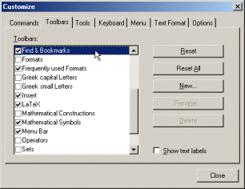

To customize the toolbars, open the dialog
Customization and select the tab
'Toolbars'.

The meanings of the controls are:
- 'Toolbars'
- A list of all toolbars available at the moment. The toolbars which are
checked, are visible at the moment.
- 'Reset'
- Resets the toolbar currently selected in the list
'Toolbars' to the default configuration. All the changes
you have made to the toolbar since the installation of TeXnicCenter
will be lost.
- 'Reset All'
- Resets all toolbars to the default configuration. All the changes
you have made to the toolbars since the installation of TeXnicCenter
will be lost.
- 'New...'
- Creates a new toolbar. You can place commands on the toolbar using
the page 'Commands'.
- 'Rename...'
- If you have selected a toolbar in the list 'Toolbars',
that has been created by you using the 'New...' command,
this button allows you to rename the toolbar.
- 'Delete...'
- If you have selected a toolbar in the list 'Toolbars',
that has been created by you using the 'New...' command,
this button allows you to delete the toolbar.
- 'Show text labels'
- If this option is enabled, the buttons on the bar, selected in
the list 'Toolbars', will be displayed with labels below
the icons.